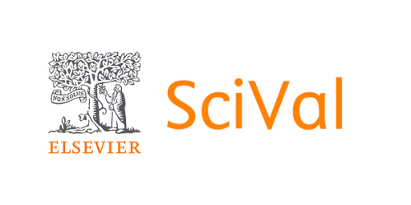

누구나 연구자 경진대회80th ANNIVERSARY / DONG-A UNIVERSITY
누구나 연구자
DATA · TREND · INSIGHT
영상을 불러오고 있습니다
THE SELECTED WORKSSciVal 연구동향분석 포스터
우리 학과 연구 인사이트,
한장의 포스터로 만나다.

390총상금 · 만 원전체 아카이브 ↗
PREVIEW 현재 전시는 디자인 확인을 위한 샘플입니다. 이름·연구 주제·이미지는 실제 수상자 정보가 아닙니다.
수상작을 불러오고 있습니다
발견했을까요?↗
관심 있는 연구 주제나 수상팀을 검색하고, 분석 결과를 PDF 포스터로 확인하세요.